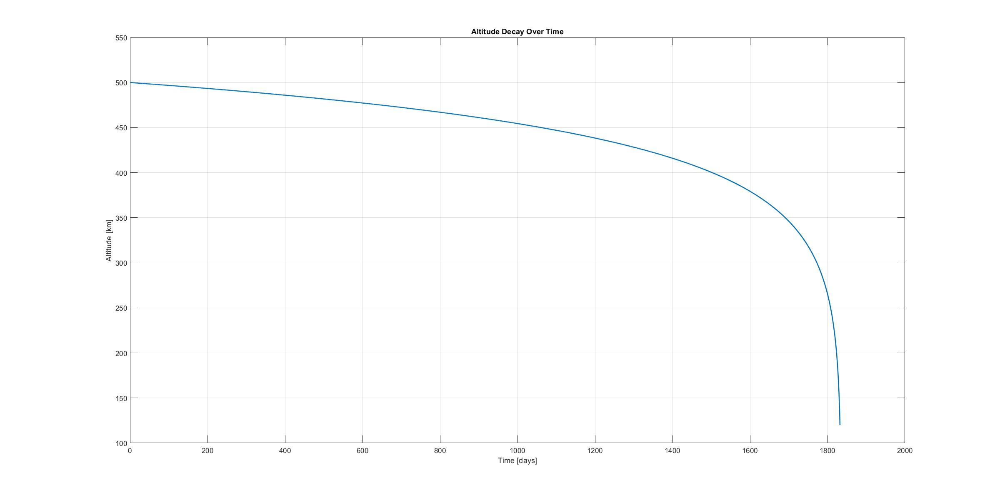

Deorbiting simulation with Matlab
Code can be found here
Introduction
This blog post is about the orbital decay simulation of a satellite with atmospheric drag in MATLAB. The script provides insight into the deorbiting process by simulating the trajectory of the satellite, calculating re-entry times, and visualizing several parameters, including how altitude decays with time.
Methodology
Step 1: Setting Up the MATLAB Simulation
The initial conditions and properties of the spacecraft are defined at the start in the MATLAB script.
- Gravitational Parameter (
mu): \(3.986 \times 10^{14} \, \text{m}^3/\text{s}^2\) - Earth’s Radius (
Re): \(6,378 \, \text{km}\) - Spacecraft Mass: \(3 \, \text{kg}\)
- Drag Coefficient (
Cd): \(2.2\) - Cross-sectional Area for Drag: \(0.01281 \, \text{m}^2\)
The satellite’s initial position and velocity are specified in meters and meters per second: - Initial Position (X, Y, Z): \((4.211560342267748 \times 10^{-13}, 6878 \, \text{km}, 0)\) - Initial Velocity (VX, VY, VZ): \((0.9541223000883489, -5.842314103991534 \times 10^{-17}, 7.552655699128404)\)
There are forces in a simulation such as: - The gravitational force is computed according to Newton’s law of gravitation. - The atmospheric drag is modeled based on altitude, velocity, and density of the atmosphere. The density shows a pattern of exponential decay in terms of a standard reference value at an altitude of 150 km and the scale height of 60 km.
The propagation is achieved using the MATLAB ‘ode45’ solver, which solves the equations of motion over time. This simulation is continued until the satellite reaches the point of re-entry above the earth, namely 120 km of altitude, after which an event function is triggered to stop the propagation.
Step 2: Generating and Analyzing Data
Once the simulation is completed, some result values are returned by the script, which include: - Re-entry Time: The time (in days and years) when the satellite reaches the re-entry altitude. - Re-entry Altitude: The altitude at which re-entry occurs. - Trajectory Visualization: A 3D plot of the satellite’s path around Earth with the re-entry point-visible. - Altitude Decay Profile: The time-altitude plot illustrating how altitude decreases over time for a satellite.
The script may return:
Reentry reached at t = 3456.78 days (9.47 years)
Reentry altitude = 119995.23 metersStep 3: Visualizing Results
The script produces two important plots: 1. 3D Trajectory Plot: This shows a spiraling trajectory of the satellite heading toward Earth as it re-enters. 2. Altitude vs Time Plot: It shows the orbit is decaying continuously due to atmospheric drag, with greater acceleration coming from denser layers of atmosphere as the satellite descends.
Both plots provide insights into the process of deorbiting and a confidence check for simulation accuracy.

Results and Implications
In the simulation the atmospheric drag had a profound influence on the orbital decay of LEO satellites. Findings include the following: - Predictable Re-entry Timeline: The script predicts accurately the time when the satellite enters the atmosphere of Earth. This provides a clear re-entry timeline for the mission planners. - Drag Parameters Matter: A change in either the drag coefficient or area can have significant effects on the deorbiting timeline, thus emphasizing the need for accurate modeling. - Useful Visualization Tools: The 3D trajectory and altitude decay plots are intuitive and provide a means for understanding and conveying the process of deorbiting.
These insights would assist in the responsible disposal of satellites and the reduced risk of space debris, thus promoting compliance with international guidelines.
Conclusion
The process of simulating a satellite deorbiting with MATLAB holds considerable value in understanding how atmospheric drag affects orbital decay. By modeling the forces on the satellite and visualizing its trajectory, engineers and scientists can safely design missions and help create a sustainable orbital environment.
This script is a basis for further studies, such as incorporating solar activity effects, simulating different designs of spacecraft, and investigating active deorbiting methods.
Feel free to experiment with the script and modify it to your needs!